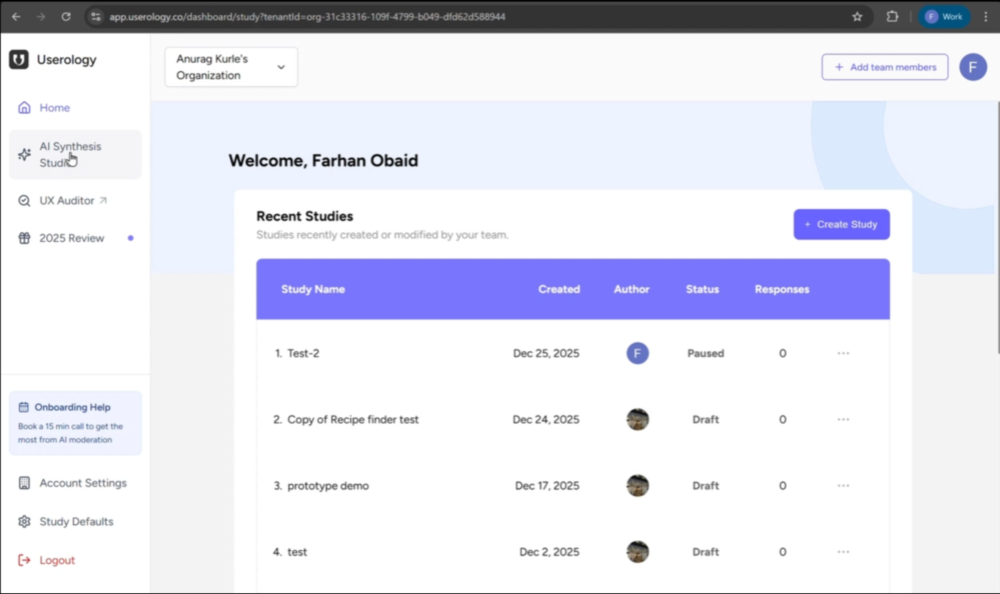
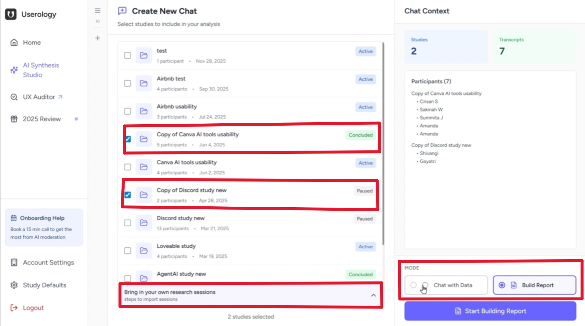
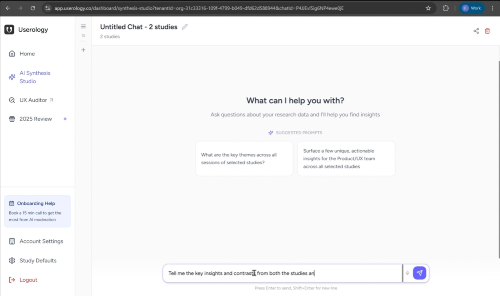
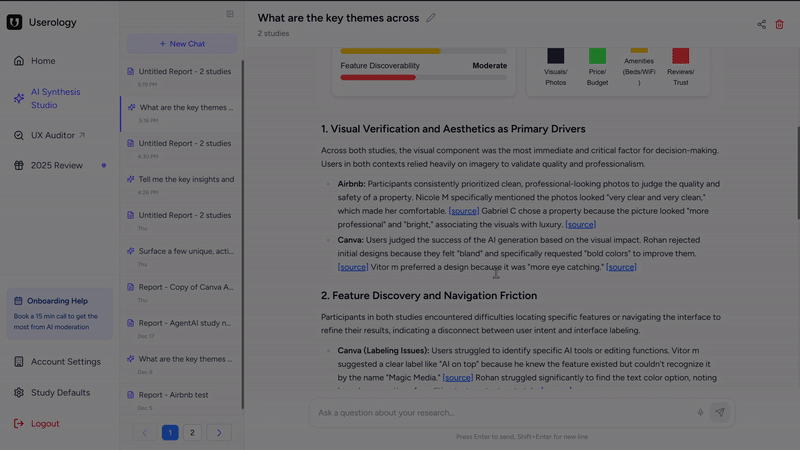
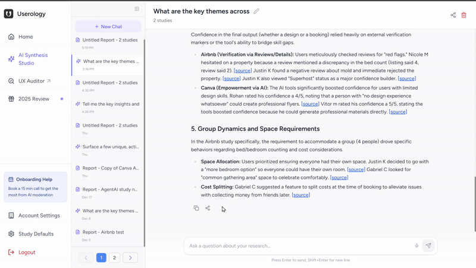
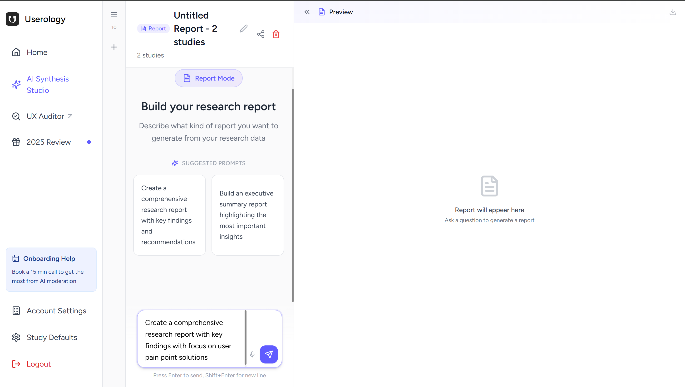
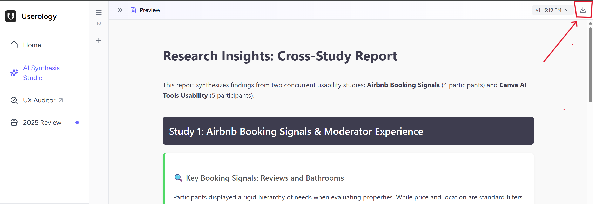
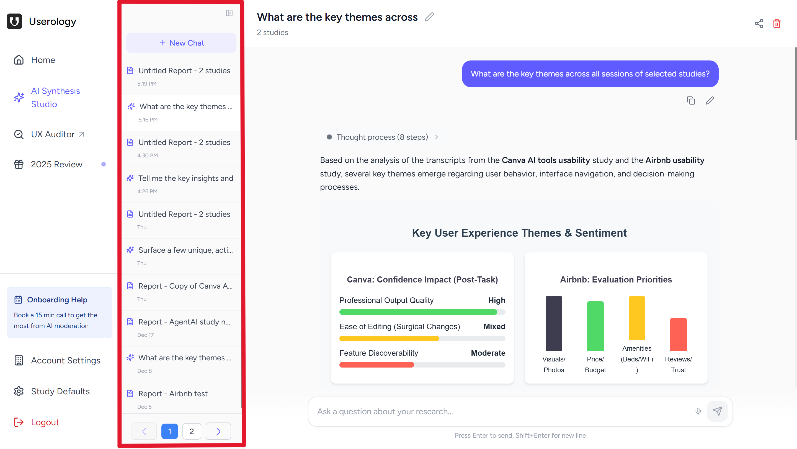

The AI Synthesis Studio in Userology helps you explore and summarize insights from your research studies in one place. It allows you to either:
Chat with Data to ask questions and explore patterns, or
Build Report to generate structured reports from your studies.
This guide explains how to use the AI Synthesis Studio and walks you through both workflows step by step.
Getting Started
From the left navigation pane, click AI Synthesis Studio.

You can select the studies you want to work with - only the studies you add here will be used. You'll also see an option to bring in your own research studies.

Once your studies are added, you can choose how you want to work with them.
Option A: Chat with Data
Best for: Quick exploration, asking questions, and understanding patterns in your research without creating a structured report.
Click Chat with Data to open the chat interface.

Asking Questions
You can interact with the AI using:
Text input — Type your question in the message box, or
Voice input — Click the microphone icon to speak your question
Example questions you can ask:
"What issues did users struggle with?"
"What feedback did users give about onboarding?"
"What themes appear across these studies?"
Verifying Sources
The AI provides responses based only on the studies you added. Here's how to verify and explore the insights:
In-text Citations — AI responses include references as source that link to specific moments in your research studies.
Click to view source — Clicking on source opens a video mini-player that lets you view the session where the insight came from.
Verify without leaving — This helps you quickly check and verify the insights without leaving the chat interface.

Sharing the Chat
You can share the chat by generating a shareable link of the chat, if you want someone else to view the conversation and insights.

Option B: Build Report
Best for: Documenting findings, reporting insights to stakeholders, and creating a structured summary from your research.
Click Build Report to start.

The AI analyzes the studies you selected and generates a structured report that brings together key insights and patterns from those studies.
Downloading the Report
You can download the report as an .html file that can be:
Opened in any web browser
Shared with stakeholders and team members
Used for documentation or presentations

Managing Your Chats and Reports
The middle pane in AI Synthesis Studio shows a history of all your previously created chats and reports. This makes it easy to revisit past research insights and continue your work.

Accessing Your Saved Work
In the middle pane, you can click and access:
Chat history — All your previous Chat with Data conversations, with timestamps showing when each chat was created
Generated reports — All reports you've built, labeled with the studies they analyzed
This helps you organize your research insights across multiple studies and projects, making it easy to reference past findings or continue exploring questions over time.
If you need further help, please email us at support@userology.co
Was this article helpful?
Thank you for your feedback!